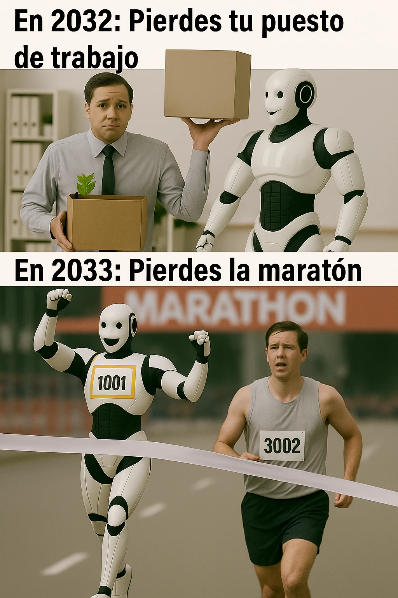

estrategIA #83 ·
La competencia sale de la oficina
El contexto
La edición publicada en vísperas del Primero de Mayo trataba el futuro del empleo ante robots más capaces. La broma imagina que, después de sustituirte en el trabajo, un robot también te supera en la maratón. Los años 2032 y 2033 pertenecen a esa escena ficticia.
Publicado en: estrategIA #83 - Humanos, IAs y robots: un 1 de mayo para pensar sobre el futuro del trabajo
Leer el texto de la imagen
En 2032: Pierdes tu puesto de trabajo En 2033: Pierdes la maratón MARATHON 1001 3002